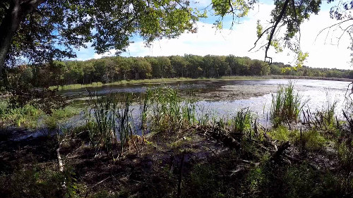

Franklin: Nation's safest city
 FRANKLIN -- Franklin is the safest city in the country with a population of 25,000 or more people, according to a website that tracks data culled from the Federal Bureau of Investigation and other law enforcement agencies. For the past three years, Franklin has ranked at or close to the top of NeighborhoodScout.com’s list of 100 safest cities in the country. According to NeighborhoodScout.com, Franklin’s violent crime rate and property crime rate rank well below state and nation averages. “Once we have this complete and accurate count of crimes for every city in the nation, our analysis takes the total crimes for each city with 25,000 or more people, and divides them by the population of the city, divided by 1,000,” according to the website. “This establishes a total crime rate per 1,000 population that is used to compare every city.“ Many of the statistics used to form the website’s profile of Franklin came from the FBI’s latest report on crime in the country, released in January 2013.